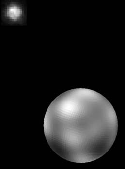
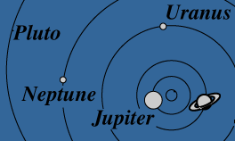

| Mass (Earth=1) | 0.01(?) |
| Equatorial diameter (km) | 3000(?) |
| Period (years) | 248 |
| Mean distance from Sun, 10^6 km | 5,900 |
| Density (water=1) | ? |
| Surface gravity m/s^2 | 0.3(?) |
|

Pluto was discovered by C. Tombagh in 1930, using the same techniques by which Neptune was found. But Pluto, much smaller than expected, is too tiny to affect faraway Uranus, so it's discovery was an accident.
Pluto's moon is a surprising one-third the diameter of Puto . Both may be escaped satellites of Neptune.
Pluto's orbit is unique in that it is much more elliptical than the other planets, and it is inclined 17° to the plane of the Earth's orbit.
|